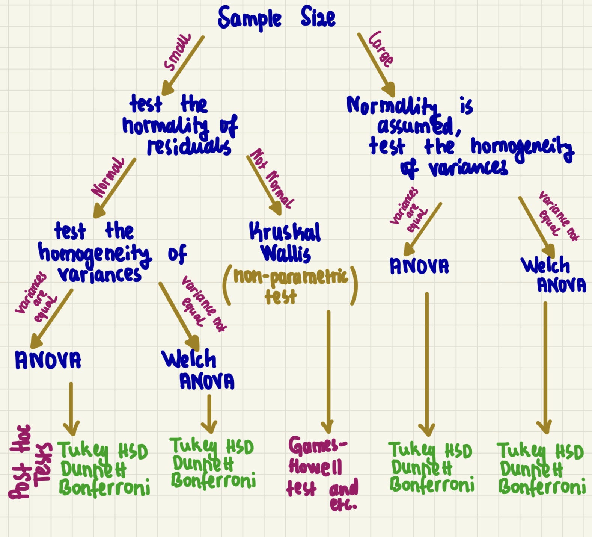

We will first go over the basics of the ANOVA, followed by a brief definition for its main assumptions. In 3rd part, a real world data will be used to conduct the ANOVA test with the given information.
Loading Package&Data
options(scipen=999) # to prevent scientific notation
library(tidyverse) # for data analysis purposes and visulization -> tidyverse mainly contains ggplot2 and dplyr
full_data_1990_2020 <- read_csv("full_data(1990-2020).csv")
full_data_1990_2020 <- full_data_1990_2020 %>%
na.omit(SI.POV.GINI) %>%
mutate(economic_inequality= case_when (SI.POV.GINI >= 45 ~ "High Inequality",
SI.POV.GINI >= 30 & SI.POV.GINI < 45 ~ "Medium Inequality",
SI.POV.GINI < 30 ~ "Low Inequality"))
full_data_1990_2020
## # A tibble: 6 × 9
## country_txt iyear count NY.GDP.PCAP.KD SE.ADT.LITR.ZS SI.DST.10TH.10
## <chr> <dbl> <dbl> <dbl> <dbl> <dbl>
## 1 Albania 2007 0 3298. 95.9 24.5
## 2 Albania 2011 0 3736. 97.2 22.9
## 3 Albania 2017 1 4432. 98.1 22.7
## 4 Argentina 1990 31 8763. 96.0 36.6
## 5 Argentina 2000 0 10091. 97.2 39.5
## 6 Argentina 2005 3 11914. 98.6 33.7
## # ℹ 3 more variables: SI.POV.GINI <dbl>, MS.MIL.XPND.GD.ZS <dbl>,
## # economic_inequality <chr>
A Gentle Introduction to ANOVA
Analysis of Variance (ANOVA) tests are used to determine whether there is a difference in the means of the groups at each level of the independent variable. In other words, ANOVA estimates how a quantitative dependent variable changes according to the levels of one or more categorical independent variables. To make it more concrete with the dataset we have, the dependent variable in our context is the number of terror events occured across countries between 1990-2020 and the independent variable is economic inequality. Therefore we would like to see whether there is a statistically significant difference across countries having High/Medium/Low economic inequality in terms of the number of terror events they experienced. Accordingly, the hypothesis for our analysis will be;
- Null Hypothesis(\(H_{0}\)): Countries, having high/medium/low economic inequality, are equal in terms of the number of terror events occurred.
- \(\mu_{High Economic Ineqaulity}\) = \(\mu_{Medium Economic Ineqaulity}\) = \(\mu_{Low Economic Ineqaulity}\)
- Alternative Hypothesis(\(H_{1}\)): At least one type of country is statistically different from others in terms of the number of terror events occurred.
Main Premises of Analysis of Variance (ANOVA)
As in the case of multivariate regression tests covered in the previous post, ANOVA tests have also 4 main assumptions. They can be listed as;
- Variable Type
- Independence
- Normality
- Equality of Variances (Homogeneity)
Variable Type
For ANOVA tests, it is necessary to have a single continuous quantitative dependent variable (DV) and a qualitative independent variable (IV) with a minimum of two levels. The IV will determine the groups that will be compared.
Independence
ANOVA tests require that the observations within each group are independent of each other, and this condition can be verified based on the study design. However, a further test, Durbin-Watson test, can be used to assess whether this assumption is satisfied or not in case needed.
Normality
ANOVA tests requires the distribution of the residuals (the differences between the observed values and the predicted values) to be normal. In other words, the residuals should be normally distributed around zero and as a rule of thumb, for large sample sizes, normality is assumed to be satisfied. In this regard, there are three ways to check whether this assumption is met.
If normality is not met, the non-parametric test, Kruskal Wallis, should be used instead of ANOVA to see at least one group is statistically different from others.
- Via visual depiction -> using Histogram and/or Quantile-Quantile Plot (QQ Plot)
- Via statistical testing -> using shapiro.test
- the Null Hypothesis (\(H_{0}\)) will be data come from normal distribution, while the alternative hypothesis
(\(H_{1}\)) will be data do not come from normal distribution.
- In this scenario, having \(p-value>0.05\) will demonstrate that there is not enough evidence to reject the Null
Hypothesis (\(H_{0}\)) and therefore this criterion is met.
- Both
Equality of Variances (Homogeneity)
For this premise of the ANOVA test, the variances of the groups should be equal. 3 ways exist to check that assumption;
- Via visual depiction -> using Histogram and/or Dot Plot and/or Scale-Location plot from
plot() in R.
- Via statistical testing -> using Levene’s test and others such as Barlett’s test and etc.
- the Null Hypothesis (\(H_{0}\)) is variances within groups are equal, while the alternative hypothesis
(\(H_{1}\)) is variances within groups are not equal.
- In this scenario, having \(p-value>0.05\) will demonstrate that there is not enough evidence to reject the Null
Hypothesis (\(H_{0}\)) and therefore this criterion is met.
- Both
If Equality of Variances is not met, Welch ANOVA test should be used
To sum up, the following figure might help which test to be used based on the specific features of the data.

Conducting ANOVA test in R
In this section, we will conduct an ANOVA test based on a real-world example. To that end, let’s start running the ANOVA test first and then see whether it satisfies the main assumptions.
ANOVA Test
anova_model <- aov(count~ economic_inequality, data = full_data_1990_2020)
Results
## Df Sum Sq Mean Sq F value Pr(>F)
## economic_inequality 2 627703 313851 12.5 0.00000584 ***
## Residuals 330 8284369 25104
## ---
## Signif. codes: 0 '***' 0.001 '**' 0.01 '*' 0.05 '.' 0.1 ' ' 1
From the results, it can be seen that \(p-value<0.05\), meaning that there is enough evidence to reject the Null Hypothesis (\(H_{0}\)) that there is no difference among groups (High/Medium/Low Economic Ineqaulity) with regards to the occurence of terror attacks. In other words, we can claim that there is statistically significant evidence that at least one group has a difference in terms of the number of terror attacks they exposed to.
Now, let’s quickly go over the main assumptions and see whether the data we have to conduct the ANOVA meet them or not.
Variable Type
Variable type fits to the description mentioned above. Particularly, we do have a single continuous quantitative dependent variable (DV) and a qualitative independent variable (IV) with a minimum of two levels
Independence
It can be claimed that the events are independent from the each other due to the study design we follow. One occurence is not influenced by another one.
Normality
As mentioned previously there are three ways to check normality of the ANOVA assumption. To recall them quickly, they are;
- visually - Histogram & QQ Plot
- statistically - via Shapiro Test
- both
Now, let go over them in the following panel.
Histogram
hist(full_data_1990_2020$count)

QQ Plot
qqnorm(resid(anova_model))
qqline(resid(anova_model))

Shapiro Test
shapiro.test(full_data_1990_2020$count)
##
## Shapiro-Wilk normality test
##
## data: full_data_1990_2020$count
## W = 0.31233, p-value < 0.00000000000000022
From the initial two panels, it is evident that our data does not exhibit a normal distribution. Both the histogram and quantile-quantile (QQ) plot, which showcase the distribution of residuals, deviate from a normal distribution. This observation is further confirmed by conducting the Shapiro test in the third panel, yielding a result of \(p-value<0.05\), meaning that there is enough evidence to reject the null hypothesis (\(H_{0}\)) that the data is normally distributed.
Although not meeting the normality assumption may introduce bias in the results, for the purpose of learning, we will proceed with examining the 4th assumption of ANOVA, which is the Equality of Variances (Homogeneity).
Equality of Variances (Homogeneity)
According to this assumption, the variances of the groups in the ANOVA test are supposed to be equal. To test that, we again have three different options;
- visually - via Histogram & Dot Plot
- statistically - via Levene’s Test
- both
Now, as it has been done previously, let’s go over with these 3 options in R.
Histogram
full_data_1990_2020$economic_inequality <- factor(full_data_1990_2020$economic_inequality,
levels = c("High Inequality", "Medium Inequality", "Low Inequality"))
ggplot(full_data_1990_2020, aes(x = count, fill = economic_inequality)) +
geom_histogram(position = "identity", alpha = 0.6) +
labs(x = "Value", y = "Frequency") +
ggtitle("Histograms of Values by Inequality Status") +
facet_wrap(~ economic_inequality, nrow = 1) +
theme(legend.position = "none")

Dot Plot
ggplot(full_data_1990_2020, aes(x = economic_inequality, y = count)) +
geom_point()

Levene’s Test
library(car)
leveneTest(count ~ economic_inequality, data = full_data_1990_2020)
## Levene's Test for Homogeneity of Variance (center = median)
## Df F value Pr(>F)
## group 2 12.592 0.000005372 ***
## 330
## ---
## Signif. codes: 0 '***' 0.001 '**' 0.01 '*' 0.05 '.' 0.1 ' ' 1
Beginning with the histogram, it is evident that the variances within each group are high due to the right-skewed distribution of the number of terror events. Upon examining the dot plot, it becomes apparent that the variances within each group also exhibit a considerable variation. To statistically test this using Levene’s test in the third panel, the resulting \(p-value\) is found to be lower than 0.05, indicating sufficient evidence to reject the null hypothesis (\(H_{0}\)) that the variances are equal across groups.
To wrap up, in this tutorial, we covered the basics of Analysis of Variance (ANOVA) test in R along with mentioning its main assumptions. I hope that this was helpful and for further reference, you can refer to the following tutorials, which provide detailed explanations of the concepts discussed in this blog post: